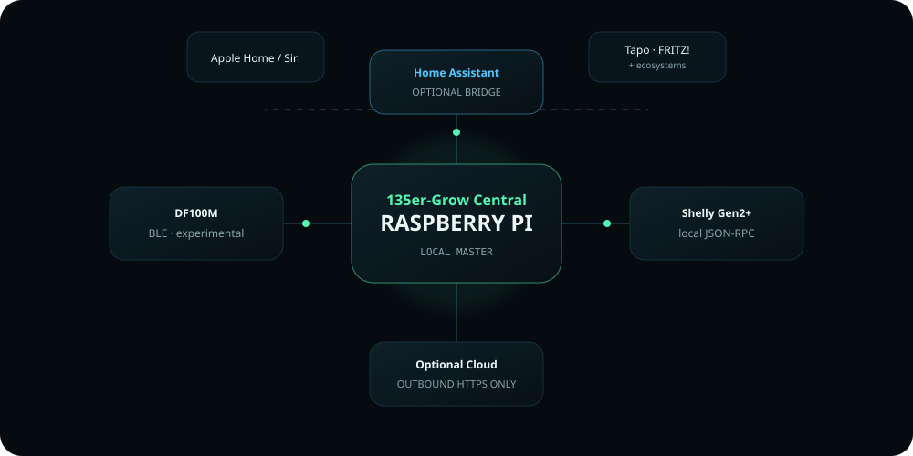
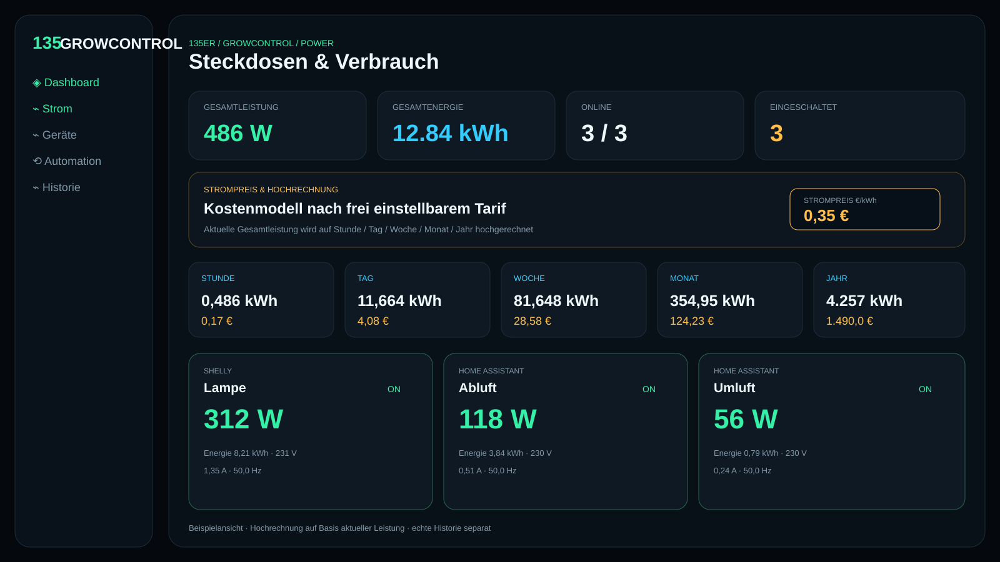

PLATFORMMASTER
RASPBERRY PI
LOCAL-FIRST CONTROL
Die lokale Oberfläche liest Smart-Plugs aus, zeigt Leistungsdaten und berechnet auf Basis eines frei eingestellten Strompreises eine Kostenhochrechnung für Stunde, Tag, Woche, Monat und Jahr.
CONTROL NODE Raspberry Pi POWER API local-only overview PLUG DATA ON/OFF · W · Wh/kWh · V · A · Hz COST MODEL configurable €/kWh PROJECTION hour · day · week · month · year SHELLY Gen2+ local JSON-RPC HOME ASSISTANT optional REST bridge WRITE GATES inventory + approval + writable + token PUBLIC SITE static / no LAN device access No credentials, tokens or direct smart-plug endpoints are exposed by this public website.

Beide verbindlichen GUI-Entwürfe sind direkt eingebettet. Die aktuelle v0.7 ergänzt Gesamtleistung, kWh, frei einstellbaren Strompreis sowie Hochrechnungen für Stunde, Tag, Woche, Monat und Jahr. Alle dargestellten Werte sind Beispielwerte; echte Live-Daten bleiben ausschließlich lokal auf dem Raspberry Pi.
